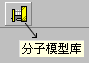
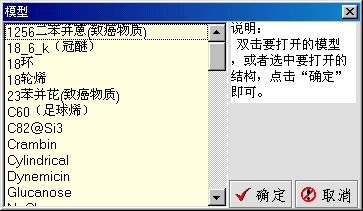
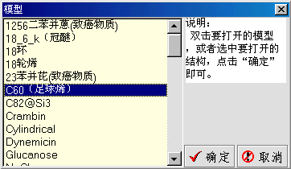
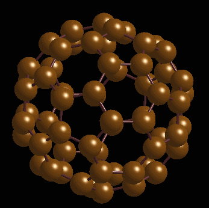
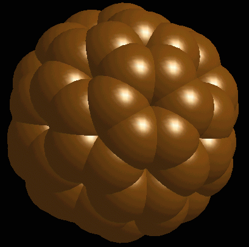
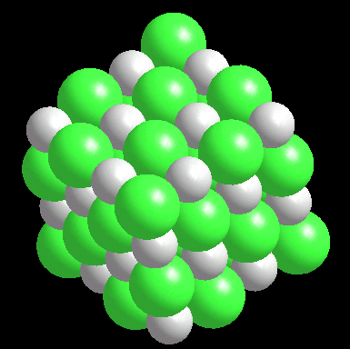
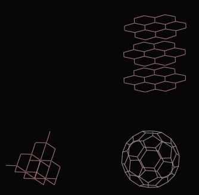
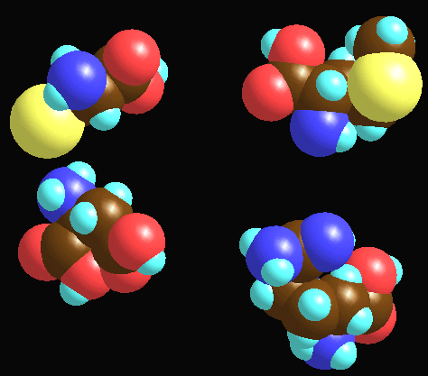

你一定已经注意到了，我们的搭建目前只局限于大部分的有机分子的搭建，
对于无机的分子，包括晶体结构等，还有有机部分里许多成环状的结构是不能
构建的。这是该软件目前的一个局限性。但这并不等于你无法看到这些结构的
三维模型，分子模型库就是提供让你观察一些无法直接搭建出的分子结构（包括
晶体结构）的。我们就来看看它是如何使用的吧！
在工具栏上有这样的按钮

，按下它，就会有一个窗体弹出来：
左边黄色的矩形框内是模型库中模型的名称，你只要双击想打开的模型的名字
或者单击想打开的模型的名字（这时它在一个蓝色的矩形框内），

，然后按下“确定”，这个模型就被调入到工作区内，我们现在选中的是足球烯。下面是它的结构：

，一样可以观看其他模式下的样子：
其实，最像足球的还是框架模型：
一样可以对它进行旋转、缩放等操作。
这个时候的模板栏被隐藏起来了，但是如果你想把模型库的模型和搭建的模型进行
比较的话也是可以的，你只要在菜单的“视图”里，点击“显示模板栏”就可以了。
这里有两点需要说明一下：
第一，因为考虑到一些大分子的显示，所以模型库里的结构的比例和构建的结
构的比例是不一致的，模型库里的比例要小一些；
第二，如果你在显示模型库里的结构的同时想在工作区里搭建个自己的模型，
请在开始搭建前在菜单“编辑”里点击“恢复初始状态”，这样做的目的是使
你放进工作区的结构能准确的落在你鼠标点击的位置上。因为经过旋转、缩放
等操作后，坐标系已经发生了变化，而你是没有觉察到这种变化的。当然，你
不是一定要这样做，但是你要做好新出现的结构不是出现在你点击鼠标位置的
心理准备。：）
我们再看一个NaCl晶体的结构：

有的时候可能需要在工作区内同时演示几个模型，以便做出比较。例如碳的
几种同素异形体。这时只要在上面提到的演示窗体里同时选中这几种模型打
开就可以了。
下面的图片就是碳的几种同素异形体：

下面是几种氨基酸的比较：

这里有一点要说明的是，为了不至于因为打开的模型过多而影响速度，同时最
多可以打开4个模型，如果选中了4个以上的模型，那么只打开前4个。